|
duilib自学教程
|
注意，这里大部分准备工作都与 DuiLib 代码无关，更多的是开发人员的基础知识普及，并不会涉及更多的 DuiLib 代码相关的内容，如果你已经非常清楚如何编译一个 DuiLib 在自己项目中使用，那么请跳过这个步骤。
首先我们打开 VS 创建一个自定义项目，这里你使用什么版本无所谓，因为 VS 项目都是可以升级降级的，除非官方代码中有个别代码在不同版本的 VS 编译器下没有指定的头文件支持。否则升级后都是可以正常编译通过的。
我这里使用 VS2017，创建项目时选择自定义项目，然后设置一下项目的路径
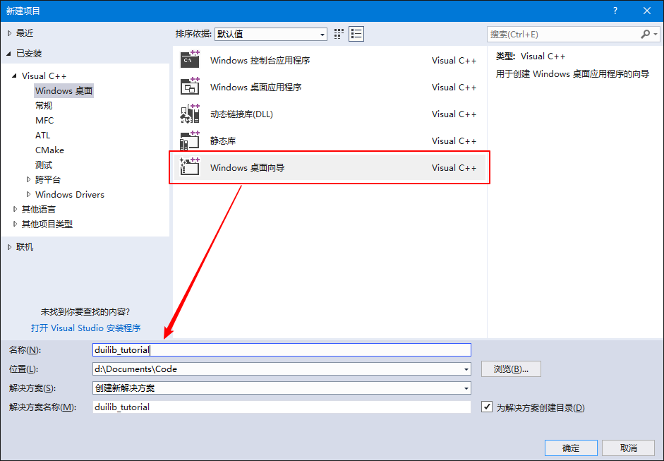在自定义窗口中，选择使用 Windows 桌面程序，并勾选 ATL。若不勾选 ATL，则会出现 “VARIANT”：未定义基类 的错误。以前我写过的正确编译 DuiLib 静态库中也有介绍
然后我们克隆 DuiLib 官方 Github 维护的代码，命令行中执行如下命令，如果你没有安装 git 客户端，请先安装 git。
为了方便学习和演示，我们复制 DuiLib 文件夹、LICENSE 授权文件、属性列表.xml DuiLib 控件的属性列表方便我们后期开发时查询，到刚才创建的项目目录下。
准备工作都做完了，下面我们正式开始编译 DuiLib，在我们刚才创建的项目中，将 DuiLib 工程导入。
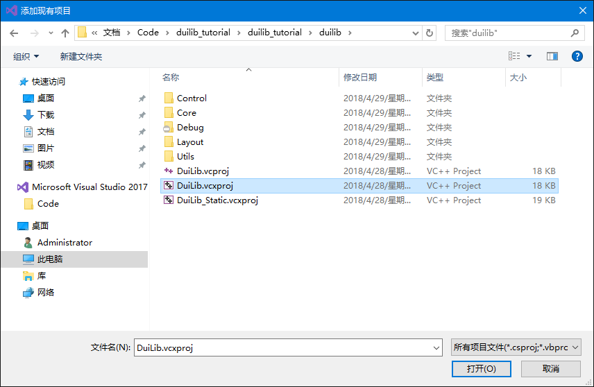为了保持统一的文件命名规则，我把项目名称改成小写了，这不会影响 duilib 的编译。导入后我们发现这个项目官方已经升级为 VS2013 WinXP 的编译环境了，所以如果你仅安装了 VS2017 还不够，你需要安装 VS2013 才能正确编译这个项目。或者更简单一点，你把项目改成 VS2017 WinXP，这样就不用再去安装一个 VS2013 了（VS2015 也可以同样处理）
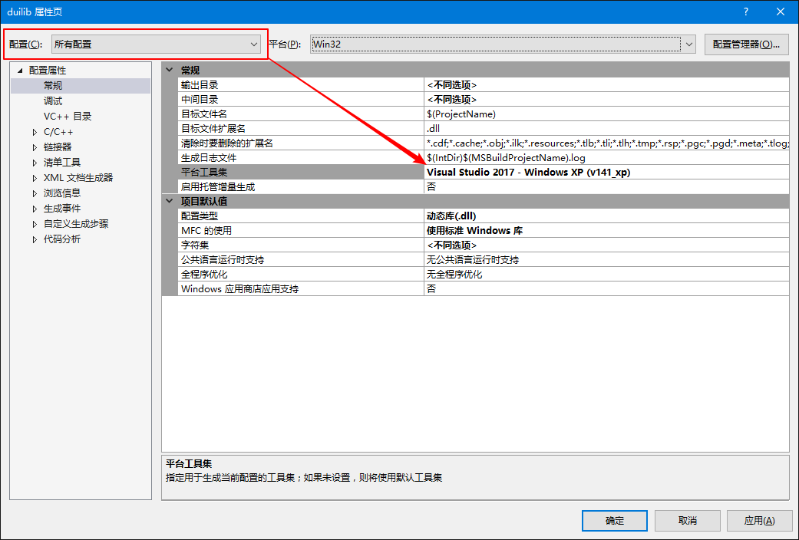安装好 VS2013 或者修改好编译平台后，我们生成一下项目，即可生成成功了。
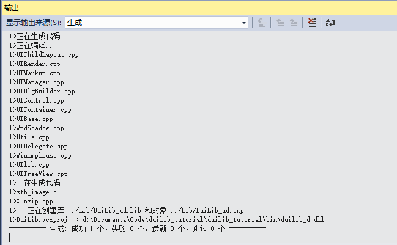上面是动态库的编译方法，非常简单，基本上官方代码拿过来就能用了。静态库要自己手动改一些东西。官方的项目目录下有一个 DuiLib_Static.vcxproj 文件，这就是静态库的配置文件，但是其缺少一个 DuiLib_Static.vcxproj.filters 的描述文件。不过没关系，我们复制一份 DuiLib.vcxproj.filters 然后改名为 DuiLib_Static.vcxproj.filters 就可以用了，后缀为 .filters 的文件主要作用就是描述项目在 VS 开发环境中的目录结构信息，LIB 和 DLL 的目录结构是一样的，所以用一个文件不同名字即可。复制以后如下
然后切换到 VS 中，我们把 DuiLib_Static 这个项目导入到解决方案中。
同样为了保持命名习惯，我还是把项目名称改成了小写的 duilib_lib
我们看到由于这个静态的项目已经很久没有更新了，还是 VS2012 创建的项目，所以根据你的需要改成 VS2013 还是 VS2017 都可以。同样是项目右键->属性，将所有配置的平台工具集修改为你需要的工具集即可。
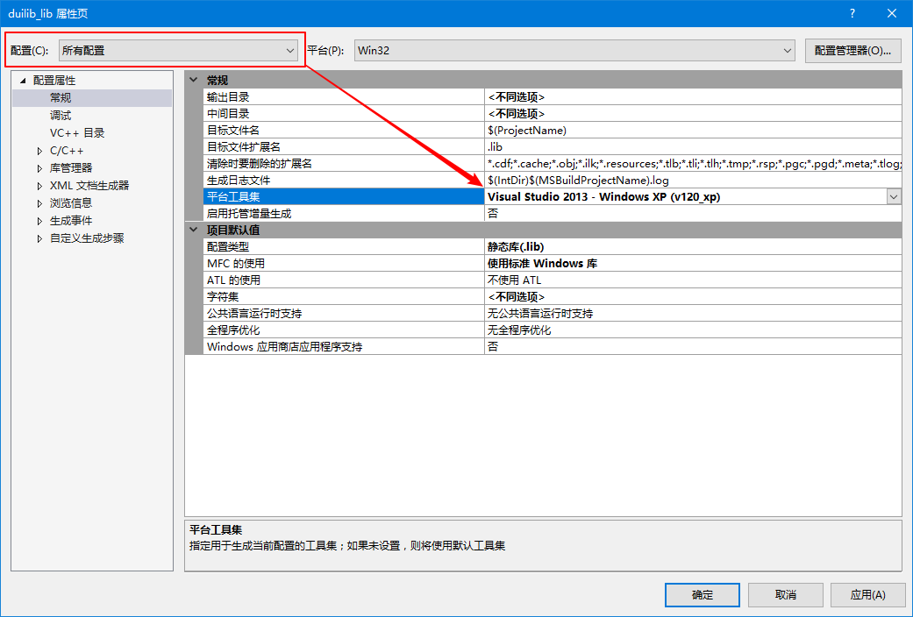对比一下动态库的项目和静态库的项目，发现静态库的 Utils 缺少一个 WndShadow.h 和 WndShadow.cpp 文件，我们给静态库工程导入这两个文件就可以了。不然后面用到的时候会提示没有导出这里面的相关功能。
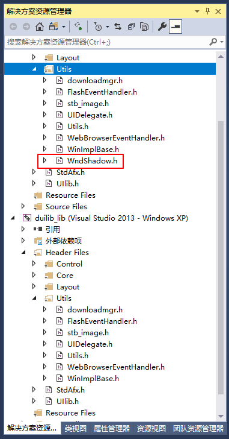导入成功后把 .h 文件和 .cpp 文件分别移动到 Utils 目录下即可。
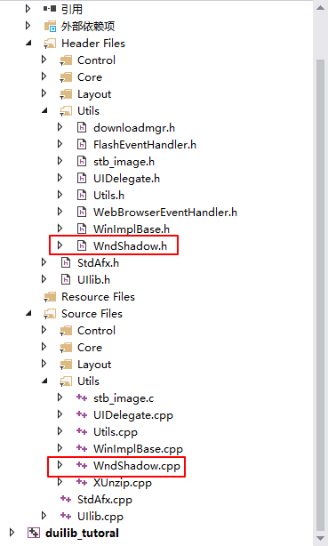此时生成一下即可生成出可用的静态库了。
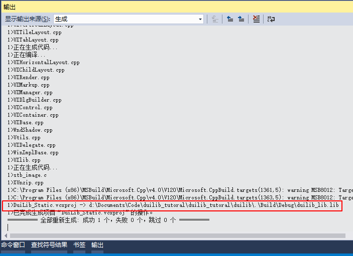官方没有提供 64 位的版本，但编译起来也很简单。点击上方的配置管理器。
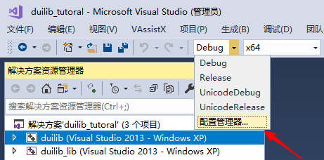给 4 种配置方案（Debug、Release、UnicodeDebug、UnicodeRelease）x64 解决方案平台中，都新增一个 x64 的配置，我这里已经新增好了。
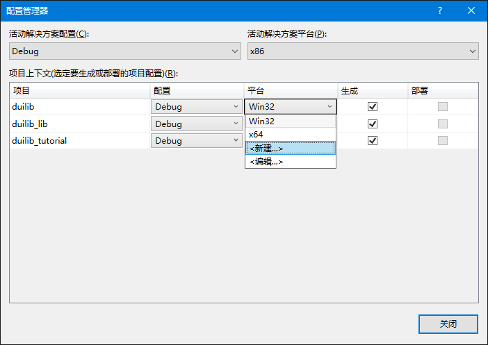新建时记得不用再重新新建一个解决方案平台。其他几个也如法炮制。
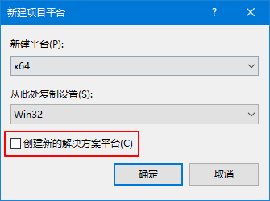如果你不需要多字节版本的 DuiLib，那么可以在属性管理器中，把默认的 Debug 和 Release 属性删除，然后把 UnicodeDebug 和 UnicodeRelease 修改为 Debug 和 Release。注意：删除完成后要保存一下，退出 VS 重新打开，再修改原来的 Unicode* 为正常的名字。如果直接修改会报错，这里可能是 VS 的 Bug，也可能是我使用不当。
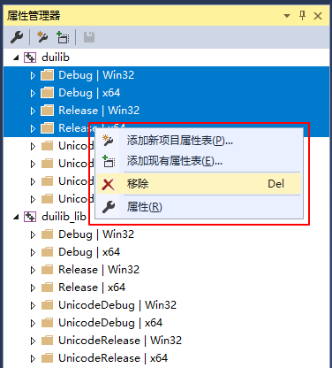修改完成后，再打开配置管理器，同样删除活动解决方案配置中的默认名字，并修改 Unicode* 为正常的名字。
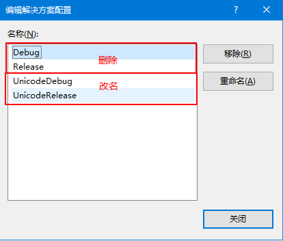这样整个项目的解决方案配置名称就统一了。接下来我们赶紧用编译好的动态库和静态库创建一个界面吧。
1.8.15